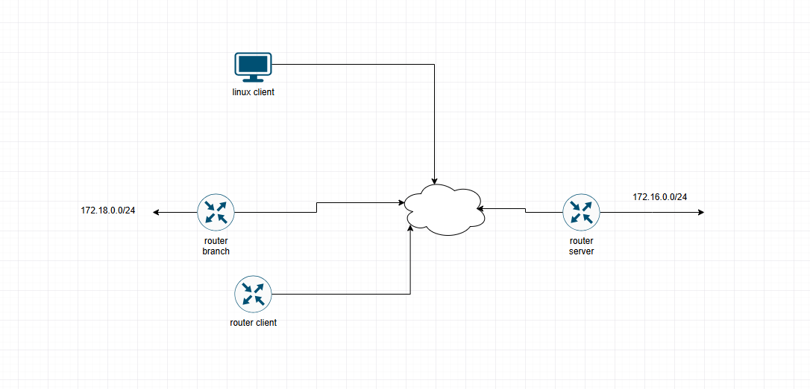
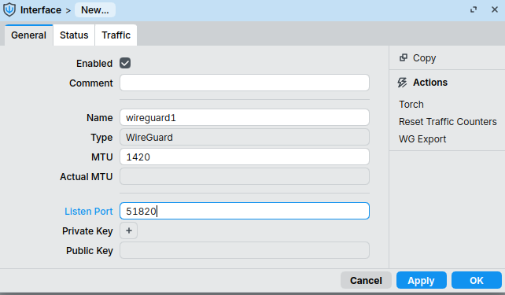
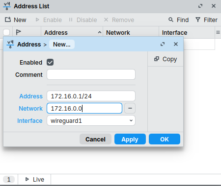
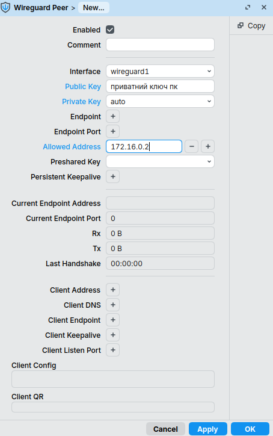
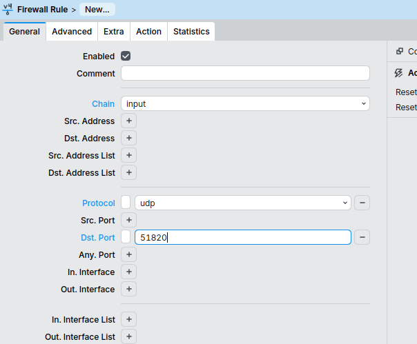

Налаштування WireGuard на MikroTik
У цій інструкції розглядається налаштування VPN WireGuard для двох найбільш поширених сценаріїв використання:
- Remote Access VPN (віддалений доступ окремого користувача до мережі)
- Site-to-Site VPN (об'єднання двох локальних мереж через Інтернет)
Теоретичні відомості
WireGuard — сучасний VPN-протокол, що використовує криптографію на основі пари ключів (Public Key та Private Key)
Для роботи тунелю кожен вузол повинен мати:
- приватний ключ (Private Key)
- публічний ключ (Public Key)
- IP-адресу всередині VPN-тунелю
Кожен WireGuard Peer описує віддалений вузол та перелік мереж, які доступні через нього
Переваги WireGuard:
- проста конфігурація
- висока продуктивність
- невелика кількість службового трафіку
- підтримка RouterOS, Linux, Windows, macOS та мобільних платформ
Схема 1. Remote Access VPN
У цьому сценарії Linux-комп'ютер підключається до мережі через WireGuard-тунель

Схема адресації
| Пристрій | Адреса |
|---|---|
| MikroTik Server | 172.16.0.1/24 |
| Linux Client | 172.16.0.2/24 |
Створення WireGuard-сервера
Перейдіть до меню:
WireGuard
Створіть інтерфейс із параметрами:
Після створення відкрийте інтерфейс повторно та скопіюйте значення Public Key

Призначення IP-адреси тунелю
Перейдіть до меню:
IP → Addresses
Створіть новий запис:

Додавання Linux-клієнта
Відкрийте вкладку Peers та додайте нового вузла

Для кожного Peer рекомендується використовувати мережеву маску
/32
Налаштування Firewall
Перейдіть до меню:
IP → Firewall → Filter Rules
Створіть правило:
Розташуйте правило вище правил блокування

Налаштування Linux-клієнта
Встановлення WireGuard
Генерація ключів
Переглянути публічний ключ:
Скопіюйте отримане значення до налаштувань Peer на MikroTik
Створення конфігурації клієнта
Створіть файл:
Вміст файлу:
[Interface]
PrivateKey = <client-private-key>
Address = 172.16.0.2/24
[Peer]
PublicKey = <mikrotik-public-key>
Endpoint = <public-ip-or-fqdn>:51820
AllowedIPs = 172.16.0.0/24
PersistentKeepalive = 25
Пояснення параметрів
PrivateKey— приватний ключ клієнтаPublicKey— публічний ключ маршрутизатораEndpoint— публічна IP-адреса або DNS-ім'я сервераAllowedIPs— мережі, доступні через VPNPersistentKeepalive— періодична передача пакетів для підтримки NAT-трансляції
Запуск тунелю
Перевірити стан:
Автоматичний запуск після перезавантаження:
Перевірка роботи
Перевірте доступність сервера:
Перевірте наявність handshake:
Схема 2. Site-to-Site VPN
У цьому сценарії через WireGuard об'єднуються дві локальні мережі.
Головний офіс
LAN: 192.168.10.0/24
|
+---------------+
| MikroTik HQ |
| 172.16.0.1 |
+---------------+
|
Internet
|
+---------------+
| MikroTik BR |
| 172.16.0.2 |
+---------------+
|
LAN: 192.168.20.0/24
Філія
Схема адресації
| Мережа | Адреса |
|---|---|
| HQ LAN | 192.168.10.0/24 |
| Branch LAN | 192.168.20.0/24 |
| WireGuard | 172.16.0.0/24 |
Налаштування маршрутизатора філії
Створіть інтерфейс:
Збережіть його Public Key.
IP-адреса тунелю
Додавання сервера
Створіть Peer:
Interface: wg-client
Public Key: <server-public-key>
Endpoint Address: <server-public-ip>
Endpoint Port: 51820
Allowed Address:
172.16.0.1/32
192.168.10.0/24
Persistent Keepalive: 25
Налаштування сервера
На центральному маршрутизаторі додайте Peer:
Перевірка маршрутизації
З вузла мережі HQ:
З вузла мережі Branch:
Діагностика
Linux
Перевірка інтерфейсу:
Перевірка маршрутів:
Перевірка WireGuard:
MikroTik
Перевірка WireGuard-інтерфейсів:
Перевірка Peer:
Перегляд журналу подій:
Корисні посилання
- https://help.mikrotik.com/docs/display/ROS/WireGuard
- https://www.wireguard.com/quickstart/
Автор: Ed